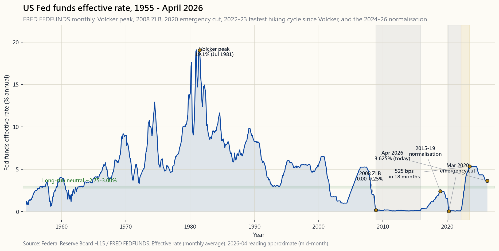
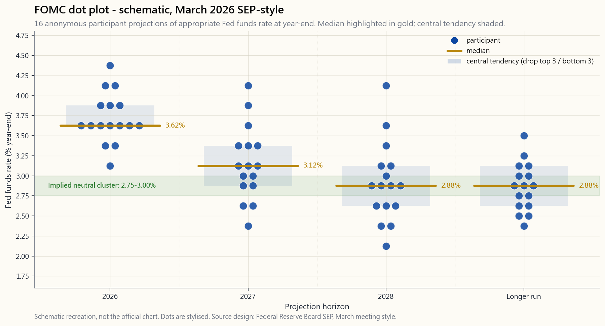

Side Lesson 17: The Fed — Dual Mandate, Dot Plot, and the Cascade Into Your Portfolio
1. Why This Is Important
The Federal Reserve sets the price of money in the largest reserve currency on Earth. Every other yield in the global system — the 2-year Treasury, the 10-year, the 30-year mortgage, the BBB corporate, the discount rate inside a Gordon-growth equity model — is built on top of that price. When the Fed moves, every asset on every brokerage statement re-prices. Most retail investors treat FOMC week as background noise. That is a mistake.
Four reasons this side lesson earns a full slot rather than a paragraph in the bond chapter:
Volcker peak (Fed funds 19%) until the March 2022 lift-off, every tightening cycle ended at a lower terminal rate than the previous one. That four-decade bond bull is now over. The 2022-23 cycle delivered 525 basis points in eighteen months — the fastest pace since Volcker — and the post-2024 normalisation is settling at a "neutral" closer to 3% than to the 0% the post-2008 generation memorised. Anyone whose mental model of the Fed was formed between 2009 and 2021 has the wrong calibration.
sets one rate. That rate flows to SOFR (overnight, one-for-one), to the 2-year (about 0.85 pass-through), to the 10-year (slope plus term premium), to the 30-year mortgage (10-year plus a roughly 175-bp primary-secondary spread), and finally to the discount rate inside every equity multiple. The whole chain is studied, regressed, and priced every day by a thousand desks. You can use the same maths.
Four times a year the FOMC publishes the Summary of Economic Projections — sixteen anonymous dots, one per participant, each showing where they think the Fed funds rate will be at year-end for the next three years and "longer run." The market trades against those dots within seconds. If you cannot read the dot plot, you are trading blind through the four most volatile weeks of the year.
retail screen is watching it.** When the Fed runs off Treasuries and mortgage-backed securities (QT), it tightens without moving the policy rate. Conversely, when it buys (QE), it eases without cutting. The 2008-2014 expansion ($870B → $4.5T), the 2020 surge ($4.2T → $9.0T), and the 2022-2026 unwind ($9.0T → $6.5T) all changed asset prices independently of the FOMC press release. The vol tail wags the dog on the balance sheet too: the marginal buyer of duration matters.
This is a working tool, not civics. By the end of the lesson you will know what each Fed lever does, where to read the signal, and how to size the resulting move into your own four-tranche portfolio.

2. What You Need to Know
2.1 The Dual Mandate — Two Numbers, One Knob
Congress wrote two objectives into the 1977 Federal Reserve Reform Act: "maximum employment" and "stable prices." That is the dual mandate. It is two targets and one main lever (the Fed funds rate), which means when the targets disagree the Fed has to choose. In 2022 it chose prices over employment — Powell's "some pain" speech at Jackson Hole — and tightened into a labour market that was still adding 400k jobs a month. In 2008 it chose employment over prices and slashed to zero while headline CPI was still 5%.
"Stable prices" is operationalised as a 2% core PCE target, in place since the 2012 Bernanke statement and reaffirmed under the 2020 Flexible Average Inflation Targeting (FAIT) framework. "Maximum employment" has no number — the Fed estimates the non-accelerating inflation rate of unemployment (NAIRU, currently around 4.0%) and tries not to let actual unemployment fall persistently below it without inflation responding.
The investing point: read the dual mandate as a regime indicator. When the Fed is fighting inflation, expect a flat-to-inverted curve, elevated real rates, and pressure on long-duration assets (growth equity, REITs, long bonds). When the Fed is fighting unemployment, expect a steep curve, low real rates, and bid-up duration. Side 06 covered the inflation half; this lesson covers the lever.
2.2 The FOMC, the SEP, and the Dot Plot
The Federal Open Market Committee is twelve voting members: the seven Board governors, the New York Fed president (permanent), and four of the eleven other regional presidents on a one-year rotation. They meet eight times a year. Four of those meetings — March, June, September, December — are accompanied by the Summary of Economic Projections: each participant submits their forecast for GDP growth, unemployment, PCE inflation, core PCE, and most importantly the appropriate Fed funds rate at year-end for the next three years and in the "longer run."
The plot of those rate forecasts is the dot plot. Sixteen or seventeen dots, one per participant (voters and non-voters), unlabelled, arranged vertically in 25-bp increments. The market reads three things out of it: the median, the central tendency (drop top three and bottom three), and the dispersion (a tight cluster signals consensus, a wide spread signals committee disagreement and therefore optionality).

Two reading rules. First, the median moves markets, the tails don't. The single dot at 5.5% in the 2027 column is some hawk who would not budge in committee. The market discounts it. Second, **the longer-run dot is the implicit estimate of "neutral"**. In April 2026 the longer-run cluster sits at 2.75-3.00%, up from the 2.5% standing estimate that prevailed for most of the 2010s. That single 25-bp shift is the most important number in the whole document — it is the regime change this lesson has been tracking.
2.3 The Tools — FFR Target, IOER, ON-RRP, and the Balance Sheet
Pre-2008 the Fed had one tool: it traded Treasury repo to keep the overnight Fed funds rate near a single target value. After 2008 the toolkit got more complicated.
The Fed funds target range. Since December 2008 the FOMC has announced a 25-bp range, not a point (e.g. "3.50-3.75%"). The effective rate floats inside that range, governed by two administered rates that form the floor and ceiling.
Interest on Reserve Balances (IORB / IOER). This is the rate the Fed pays banks on reserves they hold at the Fed. Banks will not lend overnight below this rate, so it acts as the soft floor of Fed funds. In April 2026 IORB sits at 3.65%.
Overnight Reverse Repo (ON-RRP). This is the rate the Fed pays to a broader set of counterparties — money-market funds, GSEs — for parking cash overnight. It sits 5 bp below IORB and acts as the hard floor: no one with access lends below it. The ON-RRP facility ballooned from zero to $2.4 trillion at the 2022 peak as money-market cash had nowhere else to go. As of April 2026 it is back near $200 billion — a major sign of liquidity normalisation.
The discount window is the lender-of-last-resort rate, set 25 bp above the upper bound of the target range. Used by stigmatised banks in crisis.
The balance sheet (QE / QT). When conventional rates hit zero in 2008 and again in 2020, the Fed bought Treasuries and agency MBS outright to push down long-end yields and force investors out of bonds into riskier assets. At the August 2022 peak the balance sheet was $8.97T (35% of GDP). Since June 2022 the Fed has been letting maturing securities roll off at a capped pace — $95B/month, recently slowed to $45B — Treasuries plus MBS combined. By April 2026 the balance sheet is about $6.5T (24% of GDP). Each $1T of runoff is roughly equivalent to 25 bp of conventional tightening per Fed staff estimates. That is why the dot plot and the balance-sheet plan have to be read together.
2.4 The Transmission Mechanism — How a 25-bp Cut Reaches Your Portfolio
The Fed sets one overnight rate. Asset prices live on the long end of the curve. The path from one to the other is the **transmission mechanism**. Five steps, each empirically measurable.
collateralised with Treasuries; it sits 5-10 bp below the upper bound of the FFR range, with near-perfect pass-through. When the Fed moves, SOFR moves the next morning.
short-rate the market expects over the next eight quarters." Empirical pass-through is about 0.85: a 100 bp move in expected FFR over the next two years moves the 2y by roughly 85 bp. The remaining 15 bp is uncertainty discount.
about +110 bp in expansions, near 0 in late-cycle, and inverts before recession. In April 2026 the 10y-2y is back to +40 bp after eighteen months of inversion. Long-rate pass-through from short rates is only about 0.5: term premium and growth expectations soak up the rest.
about 175 bp; in stress it widens to 250-300 bp (March 2020, October 2022). At a 4.20% 10y in April 2026 the average 30-year mortgage is 6.0%, which is what borrowers actually face.
$P/E = 1/(k - g)$ where $k$ is the equity discount rate (real 10y + equity risk premium) and $g$ is the long-run real growth rate of earnings. Hold ERP at 5%, real growth at 2%, real 10y at 1.5%; you get a fair P/E around 22. Move the 10y by 100 bp and the P/E moves by about 4 multiple points.
Week 18 (week18_rate_cascade.md) plots steps 1-4 as a single chart;
week 31 (week31_yield_curves.md) covers the 2y/10y slope dynamics.
This lesson is the layer above: how the Fed moves step 1.
2.5 Recent History — Three Regimes in Twenty-Five Years
The post-2000 period is three distinct regimes, and each one trained a different cohort of investors to expect a different Fed.
2000-2007 — the conventional regime. Greenspan/Bernanke. FFR swings from 6.5% to 1.0% to 5.25%. Balance sheet flat at $870B. This is the world the textbooks describe and the world that ended in 2008.
2008-2021 — the zero lower bound. Lehman, December 2008 cut to 0-0.25%. Held there until December 2015. First normalisation peaked at 2.25-2.50% in December 2018. The 2019 mid-cycle adjustment cut three times. Then COVID, March 2020: emergency cut to 0-0.25% in two weeks, $2.3T of QE in three months. Held at zero through March 2022. Thirteen of those fourteen years had a Fed funds rate below 1%. A trader who started in 2010 had no first-hand experience of a positive real funds rate until 2023.
2022-2026 — the rapid hiking and normalisation. March 2022 lift-off. 525 bps in eighteen months: the fastest pace since Volcker. Terminal range 5.25-5.50% reached July 2023, held for fifteen months, first cut September 2024. By April 2026 the FFR sits at 3.50-3.75%, with the dot plot pointing to ~3.0% by end-2027 and a longer-run "neutral" near 2.75-3.00%. The cycle is over; the new equilibrium is settling.
The investing read-through: **stop assuming the Fed will always rescue duration**. The 2008-2021 muscle memory was that every 10% drawdown brought a cut. The 2022-23 cycle proved that a Fed fighting inflation will tolerate a 25% equity drawdown and a 30% bond drawdown without flinching. Build your barbell on the assumption that the Fed put strikes 20% lower than it used to, not 5%.
3. Common Misconceptions
it creates. Reserves sit in commercial-bank accounts at the Fed; they only become circulating money if banks lend them out. From 2008 to 2014 reserves grew $3T while M2 grew much less and CPI averaged 1.5%. The 2020-22 episode was different because fiscal transfers (cheques) landed directly in household accounts, which is circulating money — that is what produced the inflation, not the QE leg.
30-year mortgage is set by the bond market, the prepayment-option premium, and the primary-secondary spread. The Fed influences it by ~50 bp per 100 bp of FFR move, not one-for-one.
participant thinks rates appropriately would be if their forecast is right*. Powell repeatedly says "the dots are not a committee commitment." When the data changes, the dots change. Trading the dot plot as a forward curve has lost a lot of money.
does not need White House approval for policy moves. It does not mean the Fed ignores politics — Chairs are reappointed by the President, the Board is confirmed by the Senate, and the Humphrey-Hawkins testimonies twice a year are political theatre. Read the politics into the lag between data and action.
period had $4T of QE and 1.5% average CPI. The 2020-22 inflation came from the fiscal transfer plus supply-chain breaks; QE was a contributor, not the cause. Do not confuse correlation with causation in regime data.
yield (yield-curve control). The Fed has explicitly refused to, despite repeated calls. It targets one overnight rate and lets the market set everything past three months.
has a strong record (week 10). A flat curve means the market is uncertain. They are not the same thing.
employment. Stock-price moves matter only insofar as they affect financial conditions, which feed back into prices and employment. The much-quoted "Fed put" was largely an artefact of the 2010s regime; in 2022 the Fed welcomed the equity sell-off because it tightened conditions for free.
"calendar guidance" and the 2020 "outcome-based guidance" both moved the 2y by 30-40 bp on words alone — without a single open-market trade. Words are policy when they shift expectations.
decision, but you can reliably position for the regime. Hold a barbell of cheap-and-safe plus bounded lottery tickets. The vol tail wags the dog around the announcement — sell short-dated vol into the meeting, not after.
4. Q&A Section
Q: How much does a 25-bp Fed cut move the S&P 500? A: On the day of the announcement, an expected 25-bp cut moves the index by roughly zero — it is already in the price. An unexpected 25-bp cut moves the index by about +1%. An unexpected hold when the market priced a cut (a "hawkish hold") is worth about -1.5%. The size is dwarfed by the dot plot and the press conference.
Q: What's the difference between the Fed funds rate and SOFR? A: Fed funds is unsecured overnight bank-to-bank lending; SOFR is secured (Treasury collateral) overnight repo. Post-2018 SOFR replaced LIBOR as the reference rate for $200T of derivatives. SOFR sits 5-10 bp below the upper bound of the Fed funds target range and tracks it near-perfectly.
**Q: Why does the dot plot have sixteen or seventeen dots when only twelve members vote?** A: All seven Board governors plus all twelve regional presidents (nineteen total when fully staffed, currently sixteen-seventeen due to vacancies) submit projections, regardless of whether they vote that year. The non-voting regional presidents still influence the consensus at the meeting.
Q: What is "neutral" and why does it matter? A: Neutral (also called r-star or natural rate) is the real Fed funds rate that is neither stimulating nor restraining the economy. The Fed's estimate has fallen from ~3% real (5% nominal at 2% inflation) in the 1990s to ~0.5% real (2.5% nominal) in the 2010s, and is now drifting back up to ~1% real (3.0% nominal). Where neutral sits is the single most important number for long-term equity valuations: P/E lives off the inverse of (real rate + ERP).
Q: Should I follow the Fed Chair's press conference? A: Yes — and read the prepared statement word-for-word against the prior one. Track which adjectives change. "Patient" disappearing in 2018 was the cue for the 2019 pivot. "Some pain" appearing in 2022 was the cue for the hiking acceleration. The press conference Q&A contradicts the statement maybe 10% of the time and you only catch it by reading both.
Q: How do I trade a Fed week without getting whipsawed? A: Don't increase position size in the seventy-two hours around an FOMC meeting. The vol tail wags the dog. Implied vol on the day is typically 30-40% above realised; selling that vol in size is one of the cleaner short-dated trades. If you need direction, wait for the press conference to end and the curve to settle.
Q: Is the Fed independent? A: Operationally yes — the FOMC sets policy without White House sign- off. Politically partly — Board members are confirmed by Congress, Chairs are reappointed by the President, and the Fed's authorising statute can be amended. The post-1951 Treasury-Fed Accord cemented the operational independence; that has held through eight presidents and two of them (Nixon, Trump) actively pressuring the Fed in public.
Q: What is QT and why doesn't anyone talk about it? A: Quantitative tightening — the runoff of the Fed's balance sheet by not reinvesting maturing securities. Since June 2022 the Fed has shed about $2.5T from a $9T peak. Each $1T is roughly worth 25 bp of tightening, so the program is the equivalent of an extra 60 bp on top of the conventional hike cycle. It is under-discussed because the FOMC press releases describe it in opaque "$X billion per month" footnotes rather than headline numbers.
Q: When the Fed cuts, do all assets go up? A: Long-duration assets (long bonds, REITs, growth equity, gold) get the strongest immediate boost. Short-duration assets (value stocks, short bonds) get less. If the cut signals a recession (employment mandate winning), credit spreads widen and high-yield bonds and cyclicals can sell off even as Treasuries rally. Read the reason for the cut, not just the cut.
Q: How does the dot plot interact with the SEP inflation forecast? A: They are two halves of one document. If the median PCE forecast for 2026 is 2.4% and the median FFR for 2026 is 3.5%, the implied real funds rate is +1.1% — restrictive. If those numbers move to 2.0% and 3.0% respectively, the implied real rate is +1.0% — about the same restrictive stance. Always read the dot plot net of the inflation forecast, never in nominal terms.
Q: Should I buy long bonds when the Fed starts cutting? A: Empirically, the 10-year bottoms about three months before the first cut and is choppy through the cutting cycle. The actual textbook "buy bonds before the Fed cuts" trade has worked in 4 of the last 6 cycles (1989, 2001, 2008, 2019) and lost in 2 (1995, 2024 partial). The four-tranche framework says hold a permanent strategic duration sleeve; do not try to time the cycle.
Q: What does the Fed know that I don't? A: Nothing about the future. The Fed has the same data you do, plus a better real-time read on bank stress and labour-market detail (JOLTS, weekly payrolls). It does not have a crystal ball. The 2007 minutes have the staff calling for soft-landing eleven weeks before Bear Stearns collapsed. Trade the response function, not the prediction.
The interactive Fed Lab lets you plug in your own assumptions for end-2026 and end-2027 Fed funds, plus the pace of balance-sheet runoff, and watch the implied 2y / 10y / 30y mortgage / S&P 500 P/E fall out of the same pass-through coefficients the desks use. Match your assumptions against the median dot. If your numbers diverge from the committee's by more than 50 bp, you are taking a forecasting bet — size it the way any forecasting bet should be sized: rare, sized, and bounded.
附加課17：美聯儲 — 雙重使命、點陣圖，以及對你投資組合的連鎖影響
1. 為何這課如此重要
美聯儲為全球最大儲備貨幣設定資金成本。全球系統中其他所有收益率——2年期國債、10年期國債、30年期按揭、BBB級公司債，乃至高登增長模型中的折現率——皆建基於這一成本之上。每當美聯儲行動，每位投資者戶口結單上的每一類資產均會重新定價。大多數散戶將聯邦公開市場委員會（FOMC）議息週視為背景噪音，這是一個錯誤。
以下四點說明為何本附加課值得獨立成章，而非僅作為債券章節的一個段落：
這是一套實用工具，而非公民知識。本課結束後，你將掌握每項美聯儲調控槓桿的作用、在何處讀取信號，以及如何將由此產生的市場走勢納入你自己的四組別投資組合之中。
2. 你需要掌握的內容
2.1 雙重使命——兩個目標，一個旋鈕
國會於1977年《聯邦儲備改革法案》中列明兩項目標：「最大就業」及「穩定物價」，即雙重使命。這是兩個目標、一個主要槓桿（聯邦基金利率），意味著當兩個目標相互矛盾時，美聯儲必須作出取捨。2022年，美聯儲選擇物價優先於就業——鮑威爾在傑克遜霍爾發表的「承受一定痛苦」演講——並在勞動市場每月仍新增40萬個職位的情況下持續收緊。2008年，美聯儲選擇就業優先於物價，在整體消費物價指數（CPI）仍達5%之際將利率削減至零。
「穩定物價」被具體化為核心個人消費支出（PCE）通脹目標2%，自2012年貝南克聲明起實施，並在2020年靈活平均通脹目標（FAIT）框架下獲得重申。「最大就業」沒有明確數字——美聯儲估計非加速通脹失業率（NAIRU，目前約4.0%），並力求避免實際失業率在不引發通脹的情況下持續低於這一水平。
投資要點：將雙重使命視為判斷政策取向的指標。 當美聯儲對抗通脹時，預期收益率曲線趨平甚至倒掛，實際利率上升，長存續期資產（增長股、房地產信託基金、長期債券）承壓。當美聯儲對抗失業時，預期收益率曲線陡化，實際利率下降，長存續期資產受追捧。第6課涵蓋通脹的一面；本課涵蓋調控槓桿本身。
2.2 聯邦公開市場委員會、《經濟預測摘要》與點陣圖
聯邦公開市場委員會由十二名有投票權的成員組成：七位聯邦儲備委員會理事、紐約聯邦儲備銀行行長（常任），以及其餘十一位地區聯邦儲備銀行行長中的四位按一年輪換制參與。他們每年召開八次會議，其中四次——3月、6月、9月、12月——附有《經濟預測摘要》：每位參與者提交其對本地生產總值增長、失業率、PCE通脹、核心PCE以及最重要的未來三年每年年底及「較長期」適當聯邦基金利率的預測。
這些利率預測的圖表即為點陣圖。十六或十七個點，每位參與者（有投票權及無投票權）各一，不標示姓名，以25個基點為間距縱向排列。市場從中解讀三件事：中位數、中心趨勢（去掉最高三個及最低三個）以及分散程度（點位集中代表共識，分散代表委員會意見分歧，從而意味著更大的不確定性）。
兩個解讀原則。第一，中位數牽動市場，尾部點位無足輕重。2027年欄位中那個在5.5%的單一點，是某位在委員會內寸步不讓的鷹派成員。市場對此打折扣。第二，較長期點位是「中性利率」的隱含估計。2026年4月，較長期點位集中於2.75%至3.00%，高於2010年代大部分時間所維持的2.5%估計值。這25個基點的單一調整，是整份文件中最重要的數字——正是本課一直追蹤的政策取向轉變。
2.3 工具——聯邦基金利率目標、超額準備金利率、隔夜逆回購與資產負債表
2008年前，美聯儲只有一個工具：通過回購市場買賣國債，將隔夜聯邦基金利率維持在單一目標值附近。2008年後，工具箱變得更為複雜。
聯邦基金利率目標區間。 自2008年12月起，聯邦公開市場委員會公布25個基點的區間而非單一點位（例如「3.50-3.75%」）。有效利率在該區間內浮動，由兩個管理利率形成上下限。
準備金利率（IORB／IOER）。 美聯儲向商業銀行存放於美聯儲的準備金所支付的利率。銀行不會低於此利率進行隔夜拆借，因此它構成聯邦基金利率的軟性下限。2026年4月，IORB為3.65%。
隔夜逆回購（ON-RRP）。 美聯儲向更廣泛的交易對手——貨幣市場基金、政府資助機構——提供的隔夜存款利率，低於IORB 5個基點，構成硬性下限：凡有資格使用的機構均不會低於此利率進行拆借。ON-RRP規模在2022年高峰時由零激增至2.4萬億美元，原因是貨幣市場資金無處可去。截至2026年4月，規模已回落至約2,000億美元——流動性正常化的重要信號。
貼現窗口是最後貸款人利率，設定於目標區間上限以上25個基點，供危機中面臨污名化的銀行使用。
資產負債表（QE／QT）。 當常規利率在2008年及2020年觸及零下限時，美聯儲直接購入國債及機構按揭抵押證券，壓低長端收益率，迫使投資者從債券轉向風險資產。2022年8月高峰時，資產負債表規模達8.97萬億美元（佔本地生產總值35%）。自2022年6月起，美聯儲以受控速度任由到期證券自然滾出而不再續期——初期上限每月950億美元，近期已放緩至450億，國債及按揭抵押證券合計計算。截至2026年4月，資產負債表規模約為6.5萬億美元（佔本地生產總值24%）。根據美聯儲工作人員估算，每縮減1萬億美元，大致相當於傳統收緊25個基點。這正是為何必須同時解讀點陣圖與資產負債表計劃。
2.4 傳導機制——降息25個基點如何傳遞至你的投資組合
美聯儲設定一個隔夜利率，而資產價格取決於收益率曲線的長端。從前者到後者的路徑，即傳導機制。五個步驟，每個均可實證衡量。
第18週（week18_rate_cascade.md）以單一圖表呈現步驟1至4；第31週（week31_yield_curves.md）涵蓋2年期/10年期曲線斜率動態。本課是上述內容的上層框架：探討美聯儲如何推動第一步。
2.5 近代歷史——二十五年間的三個政策取向
2000年後的時期可分為三個截然不同的政策取向，每個取向均培育出對美聯儲抱有不同預期的投資者群體。
2000至2007年——傳統取向。 格林斯潘／貝南克時代。聯邦基金利率從6.5%降至1.0%，再升至5.25%。資產負債表維持在8,700億美元不變。此即教科書所描述的世界，亦是於2008年終結的世界。
2008至2021年——零利率下限。 雷曼兄弟事件後，2008年12月降息至0至0.25%，持續至2015年12月。首輪正常化於2018年12月達到2.25至2.50%的高峰。2019年周期中段調整三度降息。其後是新冠疫情，2020年3月：兩週內緊急降息至0至0.25%，三個月內進行2.3萬億美元量化寬鬆（QE）。持續維持零利率至2022年3月。那十四年中的十三年，聯邦基金利率均低於1%。 2010年入行的交易員直至2023年才首次親歷正實際聯邦基金利率。
2022至2026年——急速加息與正常化。 2022年3月啟動加息。十八個月累計525個基點：沃爾克時代以來最急速。2023年7月達到5.25至5.50%的終端利率，維持十五個月，2024年9月首次降息。截至2026年4月，聯邦基金利率為3.50至3.75%，點陣圖指向2027年底約3.0%，較長期「中性」水平約2.75至3.00%。本輪周期已告終結，新均衡正在確立。
投資解讀：停止假設美聯儲將永遠拯救長存續期資產。2008至2021年養成的習慣性思維認為，每次10%的回撤都會帶來降息。2022至23年的周期已證明，對抗通脹的美聯儲可以容忍股票回撤25%、債券回撤30%而毫不動搖。建立你的槓鈴策略，應假設美聯儲的「保護傘」比過去低20%，而非5%。
3. 常見誤解
4. 問答環節
問：美聯儲降息25個基點，對標普500指數的影響有多大？ 答：在公告當日，預期中的降息25個基點對指數的影響接近零——已反映在價格中。出乎意料的降息25個基點，指數約上漲1%。當市場預期降息而美聯儲出乎意料地維持不變（「鷹派維持」），指數則約下跌1.5%。這一幅度遠遜於點陣圖及新聞發佈會的影響。
問：聯邦基金利率與擔保隔夜融資利率（SOFR）有何分別？ 答：聯邦基金利率是銀行間無抵押隔夜拆借利率；SOFR是以國債作抵押的有擔保隔夜回購利率。2018年後，SOFR取代倫敦銀行同業拆息（LIBOR），成為逾200萬億美元衍生工具的參考利率。SOFR低於聯邦基金利率目標區間上限5至10個基點，並緊密跟蹤。
問：既然只有十二位成員有投票權，點陣圖為何有十六或十七個點？ 答：七位聯邦儲備委員會理事加上全部十二位地區聯邦儲備銀行行長（全員到位時共十九人，目前因空缺而為十六至十七人）均提交預測，無論當年是否有投票權。沒有投票權的地區銀行行長在會議上仍可影響共識。
問：何謂「中性利率」，為何重要？ 答：中性利率（亦稱r-star或自然利率）是既不刺激也不抑制經濟的實際聯邦基金利率。美聯儲的估計從1990年代的約3%實際利率（2%通脹下名義利率約5%），降至2010年代的約0.5%實際利率（名義利率2.5%），現正回升至約1%實際利率（名義利率3.0%）。中性利率的位置是影響長期股票估值的最重要數字：市盈率取決於（實際利率加股票風險溢價）的倒數。
問：我應該留意美聯儲主席的新聞發佈會嗎？ 答：應該——而且要逐字對照前次準備好的聲明細讀，追蹤哪些措辭發生了變化。2018年「耐心」一詞消失，是2019年政策轉向的信號；2022年出現「承受一定痛苦」，是加速加息的信號。新聞發佈會的問答環節大約在10%的情況下會與聲明相矛盾，只有同時閱讀兩者才能察覺。
問：如何在聯邦公開市場委員會議息週交易而不被大幅波動掃出局？ 答：在FOMC會議前後七十二小時內不要增加倉位。波動性尾部影響顯著。會議當日的引伸波幅通常高於已實現波幅30至40%；大手沽出這部分引伸波幅是較為清晰的短期交易。若需要方向性交易，等待新聞發佈會結束、收益率曲線穩定後再行動。
問：美聯儲是獨立的嗎？ 答：操作上是——聯邦公開市場委員會無需白宮批准即可制定政策。政治上則部分是——委員會成員須經國會確認，主席由總統重新提名，且美聯儲的授權法規可被修訂。1951年的《財政部-美聯儲協議》鞏固了操作獨立性；這一架構歷經八位總統，其中兩位（尼克遜、特朗普）曾公開向美聯儲施壓，仍得以維持。
問：何謂量化收緊（QT），為何無人談論？ 答：量化收緊即美聯儲通過不再對到期證券進行再投資，從而縮減資產負債表規模。自2022年6月起，美聯儲已從9萬億美元的高峰縮減約2.5萬億美元。每縮減1萬億美元大致相當於收緊25個基點，因此整個計劃相當於在傳統加息周期之上額外加息約60個基點。此議題之所以鮮少被討論，是因為聯邦公開市場委員會的新聞稿以晦澀的「每月X億美元」腳注加以描述，而非在標題數字中呈現。
問：美聯儲降息時，所有資產都會上漲嗎？ 答：長存續期資產（長期債券、房地產信託基金、增長股、黃金）獲得最直接的提振。短存續期資產（價值股、短期債券）獲益較少。若降息釋放衰退信號（就業使命優先），信用利差會擴大，即使國債上漲，高收益債券和周期性股票仍可能下跌。解讀降息的原因，而非只看降息本身。
問：點陣圖與《經濟預測摘要》的通脹預測有何關聯？ 答：兩者是同一份文件的兩個部分。若2026年PCE中位預測為2.4%，2026年聯邦基金利率中位為3.5%，隱含實際利率為+1.1%——屬收緊性質。若這兩個數字分別變為2.0%及3.0%，隱含實際利率為+1.0%——緊縮程度大致相同。務必以扣除通脹預測後的實際利率解讀點陣圖，切勿單看名義數字。
問：美聯儲開始降息時，我應該買入長期債券嗎？ 答：實證上，10年期國債收益率往往在首次降息前約三個月見底，並在整個降息周期中震盪。「在美聯儲降息前買入債券」這一教科書式交易，在過去六個周期中的四個奏效（1989、2001、2008、2019），但在兩個周期中失敗（1995、2024年局部失效）。四組別框架建議持有長期戰略性存續期倉位；切勿嘗試擇時周期。
問：美聯儲掌握了哪些我不知道的信息？ 答：關於未來，美聯儲與你掌握的數據相同，另外對銀行壓力及勞動力市場細節（職位空缺與勞動力流動率調查、每週薪酬數據）有更即時的掌握，但並無水晶球。2007年的會議記錄顯示，在貝爾斯登倒閉前十一週，聯儲員工仍預測經濟軟著陸。交易時應著眼於美聯儲的反應函數，而非其預測能力。
互動美聯儲實驗室讓你輸入自己對2026年底及2027年底聯邦基金利率的假設，以及資產負債表縮減的速度，然後觀察隱含的2年期、10年期、30年期按揭利率及標普500市盈率如何從各交易台所採用的同一套傳導係數中得出。將你的假設與委員會中位點位進行比對。若你的數字與委員會的偏差超過50個基點，你正在進行的是預測性押注——以任何預測性押注應有的方式管理規模：少而精、有節制、且有損失上限。
補充課程 17：聯準會——雙重使命、點陣圖，以及對你投資組合的連鎖影響
1. 為什麼這很重要
聯準會為全球最大儲備貨幣設定資金的價格。全球體系中所有其他殖利率——2年期國庫券、10年期、30年期房貸、BBB級公司債、Gordon成長模型中的折現率——都建立在這個價格之上。每當聯準會行動，所有券商對帳單上的每一項資產都會重新定價。多數散戶投資人把聯邦公開市場委員會（FOMC）會議週當作背景雜音。這是個錯誤。
這堂補充課程值得獨立成篇，而非僅作為債券章節中的一個段落，理由有四：
這是一個實用工具，而非公民課。學完這堂課，你將知道每個聯準會調控槓桿的作用、從哪裡讀取訊號，以及如何將由此產生的變動納入你自己的四層次投資組合中加以衡量。
2. 你需要了解的內容
2.1 雙重使命——兩個數字，一個旋鈕
國會在1977年《聯邦儲備改革法案》中寫下兩項目標：「最大就業」與「物價穩定」。這就是雙重使命。兩個目標，一個主要工具（聯邦基金利率），這意味著當目標相互衝突時，聯準會必須做出選擇。2022年它選擇物價優先於就業——鮑爾在傑克森霍爾發表的「必須承受一些痛苦」演講——在勞動市場每月仍新增40萬個就業崗位的情況下持續緊縮。2008年它選擇就業優先於物價，在CPI仍達5%時降息至零。
「物價穩定」被具體操作化為核心PCE 2%的目標，自2012年柏南克聲明起實施，並在2020年靈活平均通膨目標（FAIT）框架下再次確認。「最大就業」沒有具體數字——聯準會估計非加速通膨失業率（NAIRU，目前約4.0%），並試圖不讓實際失業率持續低於該水準而不引發通膨反應。
投資要點：將雙重使命視為一個時代指標。 當聯準會對抗通膨時，預期殖利率曲線趨平或倒掛、實質利率升高，以及長存續期間資產（成長股、不動產投資信託、長期債券）承壓。當聯準會對抗失業時，預期殖利率曲線陡峭化、實質利率降低，以及存續期間獲得買盤支撐。補充課程06涵蓋了通膨的一半；本課程涵蓋調控槓桿。
2.2 聯邦公開市場委員會、經濟預測摘要與點陣圖
聯邦公開市場委員會由十二位有投票權的成員組成：七位聯準會理事、紐約聯邦準備銀行行長（永久成員），以及另外十一位地區聯邦準備銀行行長中輪值的四位，任期一年。他們每年開會八次。其中四次——3月、6月、9月、12月——伴隨經濟預測摘要：每位與會者提交對國內生產毛額成長、失業率、PCE通膨、核心PCE，以及最重要的——未來三年年底和「長期」適當聯邦基金利率的預測。
這些利率預測的圖形就是點陣圖。十六或十七個點，每位與會者一個（包含有投票權與無投票權者），不標名字，以25個基點為間距垂直排列。市場從中解讀三件事：中位數、集中趨勢（去除最高三個和最低三個），以及離散度（緊密的點群代表共識，寬鬆的分布代表委員會意見分歧，因此存在選擇空間）。
兩條解讀原則。第一，中位數牽動市場，尾端點位不然。2027年欄位中那個在5.5%的孤立點位，是某個在委員會中強硬到底的鷹派人士。市場會折價處理它。第二，長期點位是「中性利率」的隱性估計。2026年4月，長期點群落在2.75至3.00%，高於2010年代大部分時間維持的2.5%估計值。這單一25個基點的移動是整份文件中最重要的數字——這正是本課程一直在追蹤的時代轉變。
2.3 工具——聯邦基金利率目標、超額準備金利率、隔夜附買回以及資產負債表
2008年以前，聯準會只有一個工具：它透過交易國庫券附買回協議，將隔夜聯邦基金利率維持在單一目標值附近。2008年後，工具箱變得更為複雜。
聯邦基金目標區間。 自2008年12月起，聯邦公開市場委員會公布的是25個基點的區間，而非單一點位（例如「3.50至3.75%」）。有效利率在該區間內浮動，由形成利率地板和天花板的兩個行政設定利率所決定。
準備金餘額利率（IORB / IOER）。 這是聯準會支付給銀行在聯準會持有之準備金的利率。銀行不會以低於此利率的條件隔夜拆借，因此它充當聯邦基金利率的軟地板。2026年4月，準備金餘額利率為3.65%。
隔夜附買回（ON-RRP）。 這是聯準會支付給更廣泛交易對手——貨幣市場基金、政府贊助企業——隔夜停泊資金的利率。它比準備金餘額利率低5個基點，充當硬地板：任何有資格使用的機構都不會以低於此利率的條件出借資金。ON-RRP機制的規模從零膨脹至2022年高峰時的2.4兆美元，當時貨幣市場資金無處可去。截至2026年4月，規模已回落至約2,000億美元——流動性正常化的重要訊號。
貼現窗口是最後貸款人利率，設定在目標區間上限以上25個基點。在危機中由信用受損的銀行使用。
資產負債表（QE / QT）。 當2008年和2020年的傳統利率觸及零時，聯準會直接買進國庫券和機構抵押擔保證券，以壓低長端殖利率，並迫使投資人從債券轉向風險較高的資產。2022年8月，資產負債表高峰為8.97兆美元（占國內生產毛額的35%）。自2022年6月起，聯準會以設定上限的速度讓到期證券自然到期不再投資——最初為每月950億美元，近期已放緩至450億美元——國庫券加抵押擔保證券合計。至2026年4月，資產負債表規模約為6.5兆美元（占國內生產毛額的24%）。根據聯準會工作人員的估計，每縮減1兆美元相當於約25個基點的傳統緊縮效果。這就是為什麼點陣圖和資產負債表計畫必須一起解讀。
2.4 傳導機制——25個基點的降息如何傳遞至你的投資組合
聯準會設定一個隔夜利率。資產價格生活在殖利率曲線的長端。從一端到另一端的路徑就是傳導機制。五個步驟，每個都可以實證測量。
第18週（week18_rate_cascade.md）將步驟一至四繪製成單一圖表；第31週（week31_yield_curves.md）涵蓋2年期/10年期斜率動態。本課程是更上層的架構：聯準會如何移動第一步。
2.5 近期歷史——二十五年來的三個時代
2000年後的時期是三個截然不同的時代，每個時代訓練出一批不同的投資人，對聯準會形成不同的預期。
2000至2007年——傳統時代。 葛林斯班/柏南克。聯邦基金利率從6.5%降至1.0%再升至5.25%。資產負債表維持在8,700億美元不變。這是教科書描述的世界，也是2008年終結的世界。
2008至2021年——零利率下限時代。 雷曼兄弟倒閉，2008年12月降息至0至0.25%。維持至2015年12月。第一次正常化在2018年12月達到2.25至2.50%的高峰。2019年中期循環調整降息三次。接著是新冠疫情，2020年3月：兩週內緊急降息至0至0.25%，三個月內實施2.3兆美元的量化寬鬆。維持在零利率直到2022年3月。那十四年中有十三年聯邦基金利率低於1%。 2010年進入市場的交易員，直到2023年才有親身經歷正實質聯邦基金利率的第一手經驗。
2022至2026年——快速升息與正常化時代。 2022年3月開始升息。十八個月內升息525個基點：自沃克爾以來最快的速度。最終利率區間5.25至5.50%於2023年7月達到，維持十五個月，2024年9月首次降息。至2026年4月，聯邦基金利率維持在3.50至3.75%，點陣圖指向2027年底約3.0%，長期「中性利率」接近2.75至3.00%。本輪循環已結束；新的均衡正在形成。
投資啟示：停止假設聯準會永遠會拯救存續期間資產。2008至2021年的肌肉記憶是，每次10%的回撤都會帶來降息。2022至2023年的循環證明，一個對抗通膨的聯準會可以容忍25%的股票回撤和30%的債券回撤而不眨眼。建立你的槓鈴策略時，應假設聯準會的保護性干預門檻比過去低20%，而非5%。
3. 常見的誤解
4. 問答章節
問：25個基點的聯準會降息能使標普500移動多少？ 答：在公告當天，一個已在市場中反映的25個基點降息，指數移動幅度約為零——早已計入價格。出乎預料的25個基點降息，使指數上漲約1%。出乎預料的按兵不動（當市場已預期降息時）（「鷹派按兵不動」）則使指數下跌約1.5%。這個幅度被點陣圖和記者會所主導。
問：聯邦基金利率和SOFR有什麼區別？ 答：聯邦基金利率是銀行間無擔保的隔夜拆借；SOFR是以國庫券為擔保品的隔夜附買回。2018年後，SOFR取代LIBOR，成為200兆美元衍生性商品的參考利率。SOFR比聯邦基金利率目標區間上限低5至10個基點，並緊密追蹤。
問：為什麼點陣圖有十六或十七個點，但只有十二位成員投票？ 答：全體七位聯準會理事加上全部十二位地區聯邦準備銀行行長（滿員時共十九位，目前因空缺而為十六至十七位），無論當年是否有投票權，均提交預測。無投票權的地區行長仍在會議上影響共識。
問：什麼是「中性利率」，為什麼它很重要？ 答：中性利率（也稱為r星或自然利率）是既不刺激也不抑制經濟的實質聯邦基金利率。聯準會的估計從1990年代的約3%實質利率（在2%通膨下名目利率約5%），降至2010年代的約0.5%實質利率（名目約2.5%），目前正緩慢回升至約1%實質利率（名目約3.0%）。中性利率的位置，是長期股票估值最重要的單一數字：本益比的本質是（實質利率+股票風險溢酬）的倒數。
問：我應該關注聯準會主席的記者會嗎？ 答：應該——並且對照前一份聲明，逐字閱讀準備好的聲明稿。追蹤哪些形容詞發生了變化。2018年「耐心」一詞消失，是2019年政策轉向的信號。2022年出現「必須承受一些痛苦」，是加速升息的信號。記者會的問答環節有時（約10%的情況）與聲明相矛盾，只有同時閱讀兩者才能察覺。
問：如何在聯準會會議週交易而不被劇烈波動甩出場？ 答：不要在FOMC會議前後七十二小時內增加部位規模。尾部風險主導市場。當天的隱含波動率通常比實現波動率高出30至40%；大規模賣出這種波動率是較為穩健的短天期交易之一。如果你需要方向性操作，等記者會結束、殖利率曲線穩定後再行動。
問：聯準會是獨立機構嗎？ 答：操作上是——聯邦公開市場委員會無需白宮批准即可制定政策。政治上部分是——理事會成員由國會確認，主席由總統提名再任，聯準會的授權法令可以被修改。1951年的《財政部-聯準會協議》鞏固了操作獨立性；這在經歷八位總統——其中兩位（尼克森、川普）公開向聯準會施壓——後依然維持。
問：什麼是量化緊縮，為什麼沒有人談論它？ 答：量化緊縮——聯準會不再對到期證券進行再投資，讓資產負債表縮減。自2022年6月起，聯準會已從9兆美元的高峰縮減約2.5兆美元。每縮減1兆美元大約相當於25個基點的緊縮效果，因此整個計畫相當於在傳統升息循環之上再額外緊縮約60個基點。它之所以討論不足，是因為聯邦公開市場委員會的新聞稿在不起眼的腳注中以「每月X十億美元」的晦澀措辭描述，而非以醒目的總量數字呈現。
問：當聯準會降息時，所有資產都會上漲嗎？ 答：長存續期間資產（長期債券、不動產投資信託、成長股、黃金）獲得最強的即時提振。短存續期間資產（價值股、短期債券）獲益較少。若降息預示著衰退（就業使命主導），信用利差會擴大，即便國庫券反彈，高收益債券和景氣循環股也可能下跌。解讀降息的原因，而非只是降息本身。
問：點陣圖與經濟預測摘要的通膨預測如何相互作用？ 答：它們是同一份文件的兩半。若2026年PCE中位數預測為2.4%，2026年聯邦基金利率中位數為3.5%，則隱含的實質聯邦基金利率為+1.1%——屬於緊縮性。若這些數字分別變為2.0%和3.0%，隱含的實質利率為+1.0%——緊縮程度大致相同。永遠以扣除通膨預測後的點陣圖為準，絕不以名目利率解讀。
問：當聯準會開始降息時，我應該買進長期債券嗎？ 答：根據實證，10年期殖利率底部出現在首次降息前約三個月，並在整個降息循環中震盪。「在聯準會降息前買進債券」這個教科書交易，在過去六次循環中的四次奏效（1989、2001、2008、2019年），兩次失敗（1995、2024年部分）。四層次框架建議持有永久戰略性存續期間部位；不要試圖擇時循環。
問：聯準會知道什麼是我不知道的？ 答：關於未來，沒有。聯準會擁有與你相同的數據，加上對銀行壓力和勞動市場細節（職缺和勞工流動調查、每週薪資數據）更即時的掌握。它沒有水晶球。2007年的聯邦公開市場委員會會議記錄顯示，在貝爾斯登崩潰前十一週，工作人員還在預測軟著陸。交易的是反應函數，而非預測本身。
互動式聯準會實驗室讓你輸入自己對2026年底和2027年底聯邦基金利率的假設，以及資產負債表縮減速度，並觀察由相同傳導係數推算出的隱含2年期/10年期/30年期房貸利率/標普500本益比結果。將你的假設與委員會的中位數點位進行比較。若你的數字與委員會相差超過50個基點，你正在進行一個預測性賭注——以任何預測性賭注應有的方式衡量它：少量、明確大小，且有限。
附课17：美联储——双重使命、点阵图与对你投资组合的连锁影响
1. 为什么这一课至关重要
美联储为全球最大储备货币设定资金价格。全球体系中的一切其他收益率——2年期国债、10年期国债、30年期按揭贷款、BBB级公司债，乃至戈登增长模型中的折现率——都建立在这一价格之上。美联储每一次行动，都会引发每一份账户报告上每一类资产的重新定价。大多数散户投资者把美联储联邦公开市场委员会（FOMC）会议周视为背景噪音，这是一个错误。
这节附课之所以独占一个完整席位，而非仅是债券章节的一段文字，原因有以下四点：
这是一套工作工具，而非公民教育课。学完本课，你将清楚每一项美联储政策工具的作用、从哪里读取信号，以及如何将由此产生的市场变动合理地纳入你的四档投资组合框架。
2. 你需要掌握的内容
2.1 双重使命——两个目标，一个旋钮
国会在1977年的《联邦储备改革法案》中写入了两个目标："最大化就业"与"稳定物价"，这就是双重使命。两个目标，一个主要工具（联邦基金利率），这意味着当两个目标相互冲突时，美联储必须做出选择。2022年，美联储选择了物价优先于就业——鲍威尔在杰克逊霍尔会议上的"经历些痛苦"讲话——在劳动力市场仍每月新增40万个就业岗位的情况下坚持紧缩。2008年，美联储选择了就业优先于物价，在CPI仍高达5%时将利率砍至零。
"稳定物价"被具体化为核心PCE 2%的目标，自2012年伯南克声明以来沿用至今，并在2020年的灵活平均通胀目标（FAIT）框架下得到重申。"最大化就业"没有具体数字——美联储估算非加速通胀失业率（NAIRU，目前约4.0%），并力图避免实际失业率在不引发通胀的情况下持续低于这一水平。
投资要点：将双重使命解读为一个政策周期指标。 当美联储对抗通胀时，预期收益率曲线趋平乃至倒挂、实际利率上升、长久期资产（成长股、房地产投资信托、长期债券）承压。当美联储对抗失业时，预期曲线陡化、实际利率下行、久期资产受到追捧。附课06涵盖了通胀的一半内容；本课聚焦政策工具本身。
2.2 FOMC、SEP与点阵图
联邦公开市场委员会由十二名有投票权的委员组成：美联储委员会的七位理事、纽约联储行长（永久成员），以及其余十一家地区联储行长中轮值的四位。FOMC每年召开八次会议，其中四次——3月、6月、9月、12月——同步发布经济预测摘要（SEP）：每位与会者提交对未来三年及"长期"GDP增速、失业率、PCE通胀、核心PCE，以及最关键的——年末联邦基金利率适当水平的预测。
这些利率预测的点阵图便是点阵图。十六或十七个点位，每位参与者一个（含有投票权及无投票权委员），匿名排列，以25个基点为刻度纵向分布。市场从中解读三件事：中位数、中心趋势（去掉最高的三个和最低的三个），以及离散程度（点位紧密意味着委员会达成共识，点位分散意味着内部分歧较大、因此政策选择余地更大）。
两条解读规则。第一，中位数影响市场，尾部不影响。2027年那个处于5.5%的孤点，不过是某位在委员会中寸步不让的鹰派委员的立场。市场对此一概折价处理。第二，长期点位是对"中性利率"的隐性估算。2026年4月，长期点位的集中区间落在2.75%至3.00%，高于2010年代大部分时间所沿用的2.5%估算。这仅仅25个基点的上移，却是整份文件中最重要的数字——这就是本课一直追踪的政策周期切换。
2.3 政策工具——联邦基金利率目标、IORB、ON-RRP与资产负债表
2008年以前，美联储只有一个工具：通过交易国债回购，将隔夜联邦基金利率维持在单一目标值附近。2008年后，政策工具箱变得更加复杂。
联邦基金目标区间。 自2008年12月起，FOMC宣布的是一个25个基点的区间，而非单点目标（例如"3.50%至3.75%"）。有效利率在该区间内浮动，由形成上下限的两个管理利率约束。
准备金余额利率（IORB/IOER）。 这是美联储向银行存放于美联储的准备金支付的利率。银行不会以低于该利率的价格进行隔夜贷款，因此它构成联邦基金利率的软性下限。2026年4月，IORB为3.65%。
隔夜逆回购（ON-RRP）。 这是美联储向更广泛的交易对手——货币市场基金、政府支持企业——支付的隔夜停泊现金利率。它比IORB低5个基点，构成硬性下限：凡有资格使用该工具的机构，绝不会以更低利率出借资金。ON-RRP工具规模从零一路膨胀至2022年峰值时的2.4万亿美元，彼时货币市场现金无处可去。截至2026年4月，规模已回落至约2000亿美元——这是流动性正常化的重要信号。
贴现窗口是最后贷款人利率，设定在目标区间上限以上25个基点。供遭受市场污名化的银行在危机中使用。
资产负债表（QE/QT）。 当2008年和2020年常规利率触及零下限时，美联储直接购买国债和机构MBS，以压低长端收益率，迫使投资者将资金从债券转向风险更高的资产。2022年8月，资产负债表规模峰值达8.97万亿美元（占GDP的35%）。自2022年6月起，美联储以设定上限的节奏让到期证券自然滚出——最初为每月950亿美元，近期已放缓至450亿美元——国债与MBS合并计算。截至2026年4月，资产负债表规模约为6.5万亿美元（占GDP的24%）。据美联储工作人员估算，每缩减1万亿美元约等效于25个基点的常规紧缩效果。这正是为什么点阵图与资产负债表计划必须合并解读。
2.4 传导机制——25个基点的降息如何传导至你的投资组合
美联储设定一个隔夜利率，资产价格却依附于收益率曲线的长端。从前者到后者的路径，便是传导机制。共分五步，每一步均有实证数据可量化。
第18周（week18_rate_cascade.md）将第1至4步绘制为一张综合图表；第31周（week31_yield_curves.md）深入分析2年期/10年期利率斜率动态。本课位于更高层级：美联储如何推动第1步的变化。
2.5 近期历史——二十五年中的三个政策周期
2000年后的历史是三个截然不同的政策周期，每一个周期都塑造了不同代投资者对美联储的预期。
2000至2007年——常规政策周期。 格林斯潘/伯南克。联邦基金利率从6.5%降至1.0%，再升至5.25%。资产负债表保持在8700亿美元的平稳水平。这是教科书所描述的世界，也是在2008年终结的世界。
2008至2021年——零利率下限时代。 雷曼兄弟破产，2008年12月降至0至0.25%。维持至2015年12月。第一次正常化的峰值为2018年12月的2.25%至2.50%。2019年的中期调整降息三次。此后是新冠疫情，2020年3月：在两周内紧急降至0至0.25%，三个月内实施2.3万亿美元的量化宽松。维持零利率直至2022年3月。这十四年中有十三年联邦基金利率低于1%。 2010年入行的交易员直到2023年才有了正实际联邦基金利率的第一手经验。
2022至2026年——快速加息与正常化。 2022年3月开启加息。十八个月累计加息525个基点：沃尔克以来最快节奏。2023年7月终端利率区间触及5.25%至5.50%，维持十五个月，2024年9月开启首次降息。截至2026年4月，联邦基金利率为3.50%至3.75%，点阵图显示2027年底将降至约3.0%，长期中性利率约在2.75%至3.00%附近。本轮加息周期已结束，新的均衡正在逐步确立。
投资解读：不要再假设美联储总会出手救援久期资产。2008至2021年形成的肌肉记忆是：每一次10%的回撤都会换来一次降息。2022至2023年的周期证明，一个致力于对抗通胀的美联储，可以在股票最大回撤25%、债券最大回撤30%的情况下毫不动摇。构建你的杠铃策略时，应假定美联储保护性降息的触发点比过去低了20%，而不是5%。
3. 常见误区
4. 问答环节
问：联邦基金利率每降息25个基点，会推动标普500指数上涨多少？
答：在公告当日，预期内的25个基点降息对指数的影响约为零——价格已经提前消化。出乎预料的 25个基点降息将推动指数上涨约1%。而当市场已定价降息却意外维持不变（"鹰派按兵不动"）时，影响约为-1.5%。这一波动幅度远小于点阵图和新闻发布会带来的冲击。
问：联邦基金利率和SOFR有什么区别？
答：联邦基金利率是银行间无担保隔夜拆借利率；SOFR是以国债为抵押的有担保隔夜回购利率。2018年以后，SOFR取代LIBOR，成为200万亿美元衍生品的参考利率。SOFR比联邦基金目标区间上限低5至10个基点，两者走势几乎完全同步。
问：点阵图有十六或十七个点位，但只有十二人有投票权，为什么不一致？
答：全部七位委员会理事加上全部十二位地区联储行长（满员时共十九人，目前因职位空缺实为十六或十七人），均须提交预测，无论当年是否有投票权。无投票权的地区联储行长仍会在会议中影响共识的形成。
问：什么是"中性利率"，为什么它很重要？
答：中性利率（也称r-star或自然利率）是既不刺激也不抑制经济的实际联邦基金利率水平。美联储的估算从1990年代的约3%实际利率（2%通胀下约5%名义利率），下降至2010年代的约0.5%实际利率（约2.5%名义利率），目前正回升至约1%实际利率（约3.0%名义利率）。中性利率的高低是长期股票估值最关键的单一变量：市盈率的高低取决于（实际利率+股权风险溢价）的倒数。
问：我应该认真追踪美联储主席的新闻发布会吗？
答：应该——并且要逐字对比当次与上次的准备声明，跟踪措辞的变化。2018年"耐心"一词消失，是2019年政策转向的信号。2022年"经历些痛苦"一词出现，是加速加息的信号。发布会答问环节与声明内容产生矛盾的概率约为10%，只有同时阅读两份材料才能捕捉到。
问：在FOMC会议周如何交易而不被反复扫止损？
答：在FOMC会议前后七十二小时内，不要加大持仓规模。波动率尾部效应在此期间极为剧烈。当日隐含波动率通常比已实现波动率高出30%至40%；大规模卖出这一波动率，是较为清晰的短期交易策略之一。如果必须做方向性交易，等到新闻发布会结束、收益率曲线稳定后再行动。
问：美联储独立吗？
答：操作层面是的——FOMC无需白宫批准即可制定政策。政治层面只是部分独立——委员会理事须经国会确认，主席由总统任命连任，而每年两次的汉弗莱-霍金斯证词本身就是政治剧场。1951年的财政部-美联储协议奠定了操作独立性的基础；这一框架历经八位总统，其中两位（尼克松、特朗普）曾公开向美联储施压，至今仍然成立。
问：缩表是什么？为什么没什么人谈论它？
答：缩表即量化紧缩——美联储通过不再将到期证券所得资金进行再投资，逐步压缩资产负债表规模。自2022年6月起，美联储已从9万亿美元的峰值减少了约2.5万亿美元。每缩减1万亿美元约等效于25个基点的紧缩，因此这一项目相当于在常规加息周期之外额外施加了约60个基点的紧缩。它之所以鲜少被讨论，是因为FOMC新闻稿以晦涩的"每月X亿美元"注脚形式描述，而非以醒目的标题数字呈现。
问：美联储降息时，所有资产都会上涨吗？
答：长久期资产（长期债券、房地产投资信托、成长股、黄金）获得最强的即时提振。短久期资产（价值股、短期债券）所受影响较小。如果降息是衰退预警信号（就业使命主导），信用利差将扩大，即便国债上涨，高收益债券和周期性股票也可能下跌。解读的重点是降息的原因，而非降息行为本身。
问：点阵图如何与SEP的通胀预测相互关联？
答：它们是同一份文件的两个组成部分。若2026年PCE中位预测为2.4%，2026年联邦基金利率中位预测为3.5%，则隐含实际利率为+1.1%，属于紧缩性立场。若这两个数字分别变为2.0%和3.0%，隐含实际利率为+1.0%，紧缩程度大致相当。始终用扣除通胀预测后的实际利率来解读点阵图，而非名义利率。
问：美联储开始降息时，我应该买入长期债券吗？
答：从历史经验看，10年期国债收益率触底的时间通常在首次降息前约三个月，并在整个降息周期中呈现震荡走势。所谓"在美联储降息前买入债券"的教科书式交易，在过去六次周期中有四次有效（1989年、2001年、2008年、2019年），有两次失效（1995年、2024年部分失效）。四档投资组合框架的建议是保持一个稳定的战略性久期配置；不要试图精准捕捉周期时点。
问：美联储掌握了哪些我不知道的信息？
答：没有任何关于未来的特别信息。美联储与你拥有相同的数据，外加对银行压力和劳动力市场细节（职位空缺及劳动力流动情况调查JOLTS、每周就业数据）更及时的读取。它没有水晶球。2007年的FOMC会议记录显示，就在贝尔斯登崩溃前十一周，工作人员仍在预测软着陆。交易的是美联储的反应函数，而非其预测。
互动美联储实验室允许你输入对2026年底和2027年底联邦基金利率及资产负债表缩减节奏的个人假设，并将其代入交易台所使用的传导系数，输出隐含的2年期/10年期/30年期按揭/标普500市盈率结果。将你的假设与委员会的中位预测进行比对。若你的数字与委员会的预测相差超过50个基点，你就是在进行一次预测性押注——应当按押注方式管理：稀少出手、规模有限、损失可控。